Display Boards
From the home page choose the display board view
The content of the page will vary depending upon how you set it up.
The display board or projector or TV or whatever is just a clean and simple web page, which is broadcast from the Tanda Player’s HDMI output directly or from a laptop or a slave Tanda Player device remotely positioned.
The display board can be accessed from a laptop or a PC connected to the Tanda Player network and there can be any number of such displays going at the same time. However, they may show different background images.
Your own Images

The display screens show background images, either from the internal set included with the Tanda Player or from the users own photographs and images on the USB device in a folder called “background”. It uses one set or the other for each group. So you can leave the cortina images to default to the internal set and just have a folder called “background/images” and it will use these images.
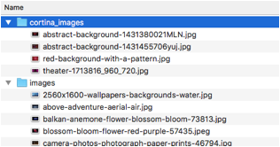
The writing over the top of the images is derived from the playing songs and the information can be shown or hidden through the settings on the configuration page for the “Display Board”
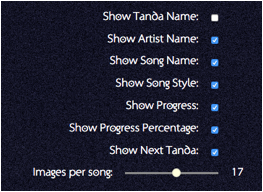
Simply tick or untick the options as required to give the content you wish to share with the dancers.
You can also provide some text to be shown in addition such as “Next Milonga is on Friday”. See below.
The “Images per song” can be between 1 and 30. A value of 1 will keep one image on the screen for the entire song. A value higher than this will change the image as required whilst the song plays and can be used to create a more slide-show effect.
Depending upon the projector display or TV resolution, shape or size, you may need to change the font size so that it is both readable and fills the screen appropriately. Note that adjusting some properties will cause the screen to blank in some cases. Clicking on save settings or changing more settings may restore this. But it is not recommended to do this whilst live.
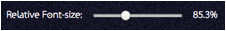
You may also want to dim down the images brightness to help the writing stand out a little more
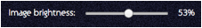
If the venue is very dim, the display board may be too bright and again this can be dimmed
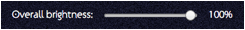
Text
If your audience is not English speaking then you may wish to change the words used on the display board. “Cortina” and “Tanda” are fixed but other words can at the DJ’s control.
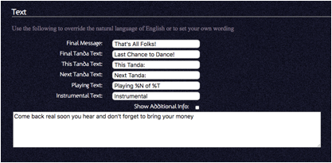
When the very last Tanda finishes playing, the final Cortina will use the special text from the “Final Messaage”.
In the bottom right during the last Tanda, the text is from “Final Tanda Text” and is for saying “Last Tanda” or something like it.
During a Cortina the Tanda which will follow is introduced with the “This Tanda Text” where as during a Tanda the next Tanda is introduced using “Next Tanda Text”.
If progress is being shown, then the wording is “Playing Text” and the %N will be replaced with the number of the song within the Tanda and the %T will be the total number of songs in the Tanda. E.g. Playing 3 of 4.
Songs are marked as instrumental or not when classified. When a Tanda is put together it is summarised as all Instrumental or not. To make sure the words make sense they can be overridden with the “Instrumental text” in which the term for instrumental can be added. If you do not want this clarification on the display then simply leave this field blank.
Styles are shown as per the individual songs but if the Tanda contains a mix of styles then the display board will show “Mixed” for the style.
Video
As well as showing static pictures, the system can display videos on the display board in much the same way as the static images. Note that videos will not be shown in the display board directly connected to the Tanda Player due to the extra load this would create on the Tanda Player. Instead any laptop or other external display boards can make use of them.
Create a folder called “videos” on the USB device and copy your MP4 format videos to it.
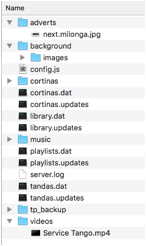
Increase the probability of a video being selected as against a static image using the slider. Values of 0 will never pick a video even when they are available and 100% will always use videos.
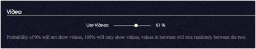
Note that videos will continue to play even when the current song ends unlike static images that change. However, when a Cortina is played the video will be overlaid with the Cortina information whilst the Cortina plays. If it is still playing on return then the display will resume the showing of the video.
Novelty Event Countdown
As a non-serious addition, you can set up messages to be shown after a countdown to a given time. For example, “Happy New Year” or “Buffet now open”.
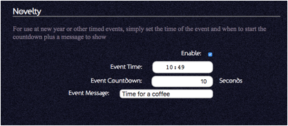
Tick the “enable” button, set the time (it defaults to the next time this occurs and is in 24-hour clock – 00:00 is midnight!). The countdown is simply the number of seconds to go and is shown as a large number on the screen. At the given time, the message is shown on a black background. It fades away after 15 seconds.
Once used, remember to switch it off again otherwise it may occur at another event!
Note – The time of day on the Tanda Player may not be the actual time to the nearest second. This is set by default every time an application is opened from a laptop or PC and the laptop’s time is used to set the Tanda Player’s clock. However, due to delays in the whole process of getting the time into the Tanda Player and then setting the Tanda Player’s own internal clock, it may be a second or two out. Also note when using the HDMI output on the Tanda Player, the display board is not a priority of the Tanda Player and so its countdown may be erratic whilst other more important things happen. Therefore, if this feature is to be used, the best results will be had from connecting the display boards to laptops or slave devices.
Adverts
Adverts are JPG or PNG images that might show details of the next Milonga somebody wants to hold. Rather than show this as a regular background image which would have the artist and title text drawn all over it, they are shown by themselves with no overlaid text.
At the top level of the USB create a folder called “adverts” and place any flyers/adverts for up-coming events or your next Milonga etc.
Then configure the Tanda Player to show these periodically.
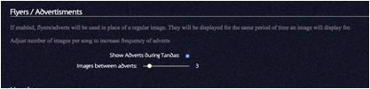
Tick the box to enable and clear the box to disable the showing of adverts.
During the Tanda, the DJ can set how many images to show such as 10 per song. The slider for the adverts then imposes that every Nth image will be the advert instead. Therefore if set to 3, every 3rd image will be the advert and then a short while later it will continue to show another image.
Embedded Artwork
If your music files have embedded artwork such as album covers within them these can be shown on the display board over the top of a standard background image.
How useful you find this without putting in lots of work
will depend upon where your music collection has come from and what you have
done with it since!
There will only be usable images already if:
·
Your collection comes from a MS-Windows
environment and you used Windows Media Player or a compatible player, then your
music folders are likely to contain additional files such as “Folder.jpg” or
“xxxx_small.jpg" etc. The media player creates these automatically.
·
You have used editing software that embeds
artwork into the actual music file
·
You purchased songs from an on-line supplier
that provides the artwork in their files.
Not all music files have embedded artwork. If you
enable this new feature but the songs do not have embedded artwork the display
board will not show anything different to the normal behaviour prior to this
release. However, the system will try to extract the images each time you
reference a song and this is a waste of the Tanda Player’s resources.
As a quick check you can use the Live Player or any place
you can get to the classification pop-up window and use the middle tab to see
the ID-3 tags as this view shows the image if there is one.
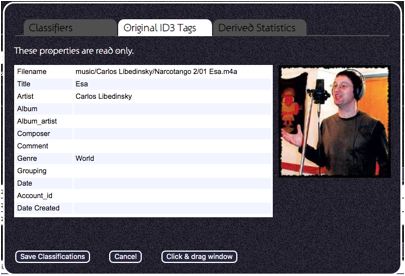
If you do not have images already and do not wish to add
them to your music files you can still manually add your own “Folder.jpg” file
to each folder if you wish to use this feature. It is quite simple to
“Google” an orchestra / singer etc. and find images - you can then drag these
onto the USB device and rename them to “Folder.jpg” - note that they must
be JPG format already! You cannot use PNG images etc. Note that you may
wish to consider using a set of simpler and darker background images to display
the album artwork over!
The image position / size / rotation can be controlled
through the setup page. The end result may look something like this -
Here I dragged an image off the web:
The controls are on the “Display Board” tab of the
setup/configuration app and are currently like this:
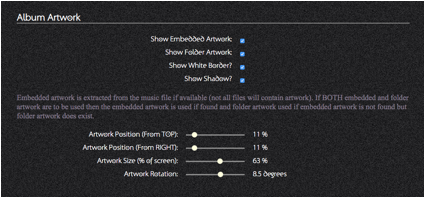
To disable the feature you simply un-tick the top two items
- Show Embedded Artwork and Show Folder Artwork.
If you know you do not have Embedded artwork but still want
to use the “Folder.jpg” idea, then as mentioned above, un-tick the Embedded
checkbox as the Tanda Player will otherwise try to open the file and read the
image out each time it is required and if there is no image to extract this is
just a waste of time and power!